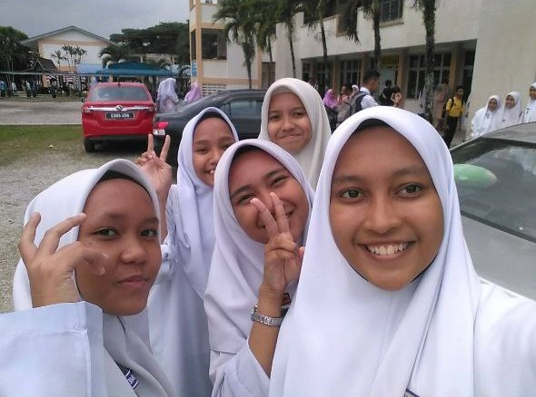
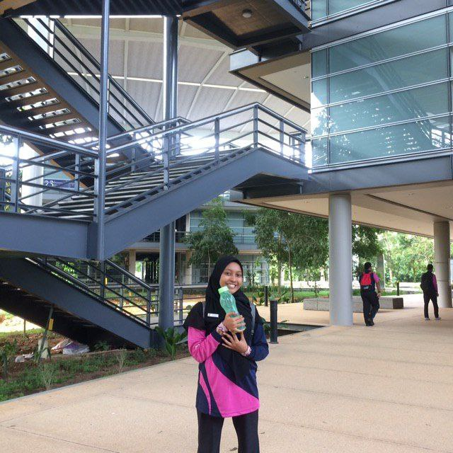
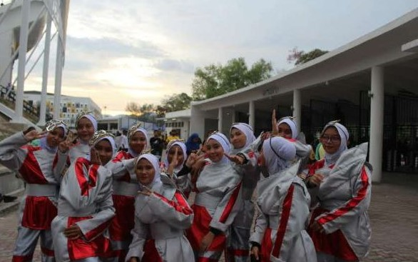
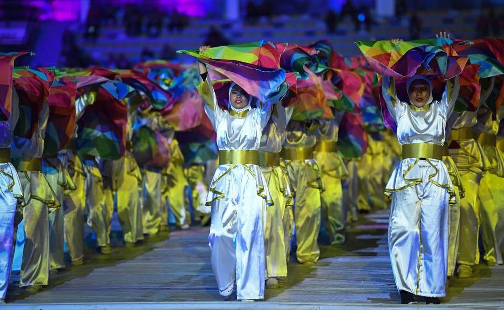
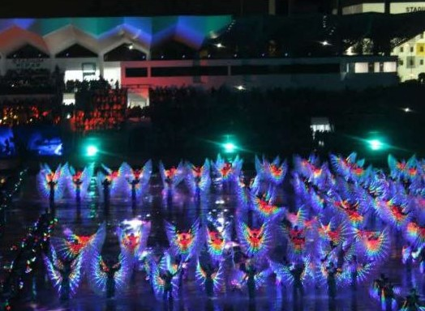
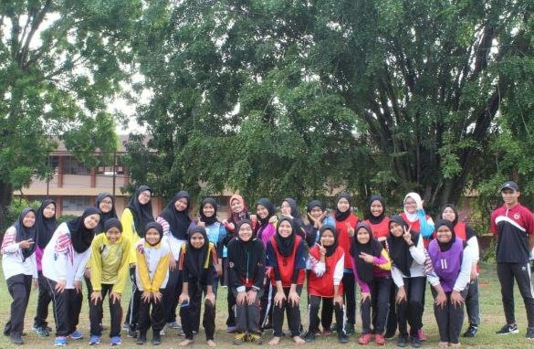
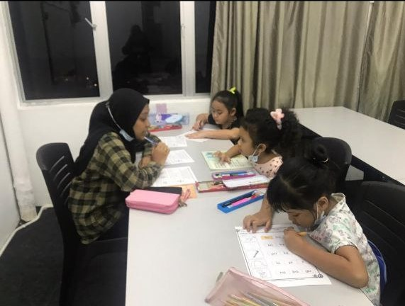
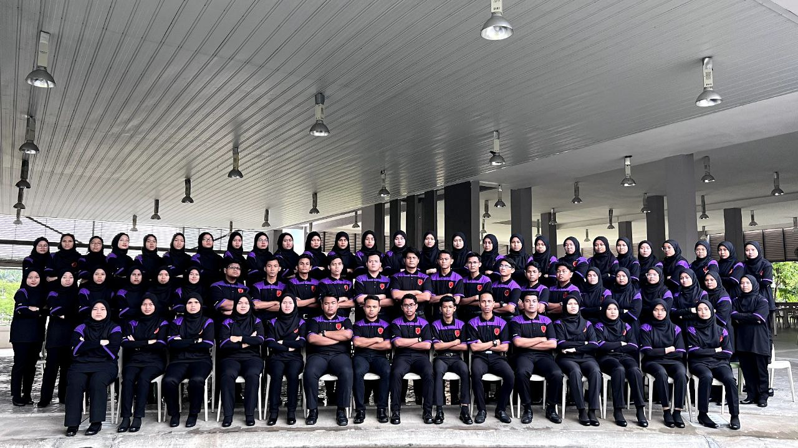
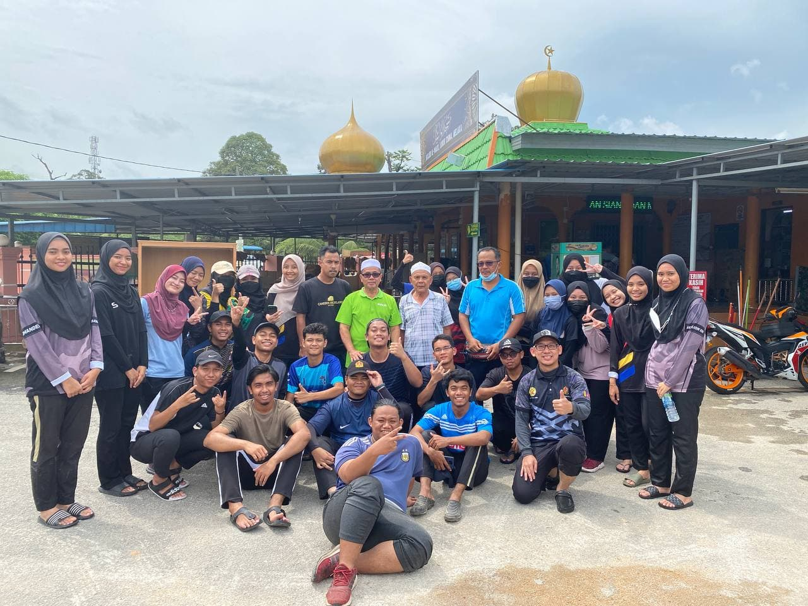
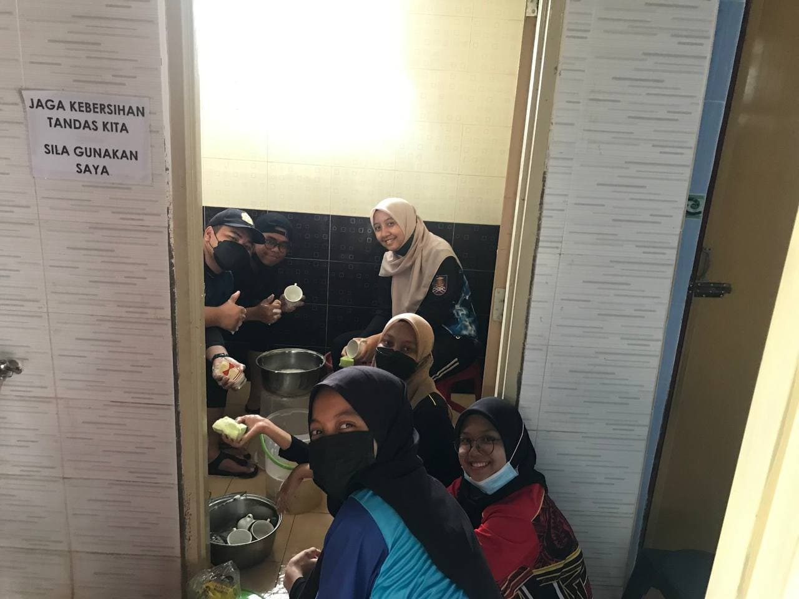

.png)

.png)


I am an ex-student from Sekolah Menengah Kebangsaan Jati, Ipoh. When I was in school, I had a responsibility of being a prefect when I was in primary school, and a librarian when I was highschool.
 
In early 2019, I became active exploring school around Perak by participating in academic programs that have been organized. Many things I gained during the exploration which is, I was able to gain knowledge and get to know many friends.




I had also given my energy and support as a participant in the Sukma Ceremony 2019's performance. In addition, I am also active in co-curriculum where I'm active in sport such as handball, netball, athlete and dikir barat. I also loves to hiking when I had a free time. I have also been active involved in charity activities at orphanage old folks and tahfiz center around Perak. I also have experienced of being a facilitator in a Islamic program.

.png)
After graduating from highschool, I was offered a job as a temporary teacher at the tuition centre. Besides studying, I'm also working to make a side income during these pandemic season.

And now, I'm pursuing diploma studies at UiTM Rembau, majoring Information Management. During my diploma year, I joined the Komander Kesatria association in college. After joining the association, I was able to gain a lot of knowledge directly or indirectly. For example, I'm able to learn how to manage a big event when in semester 2, I also able to participate in programs either around or outside the campus. In addition, I can also learn how to divide study and work time. I learnt to adapt to a variety of group work people and environment. And what can I sum up is, they are my home when I'm in diploma. They are always have each other's side through ups and downs. This is my best experience that I've ever had.
 
Throughout my studies, I also actively participated in volunteering programs that were held, for example flood volunteering activities in Negeri Sembilan.